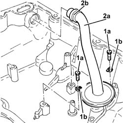
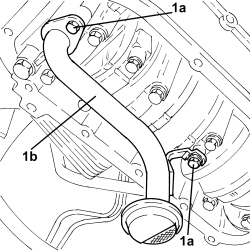

1084B28 ENGINE OIL INTAKE PUMP - R + R WITH CRANKCASE SUMP REMOVED
- Path
- Procedures > 10 ENGINE > 1084 ENGINE LUBRICATION > 1084B ENGINE OIL LUBRICATION CIRCUIT > 1084B28 ENGINE OIL INTAKE PUMP - R + R WITH CRANKCASE SUMP REMOVED
- Kind
- repair procedure (removal / refitting; the operation number is the code)
- Applies to
- engines: 2.2, 1.9 JTD 8v, 1.9 JTD 16v, 2.4 JTD 20v; all production periods
- Interactive page
- https://sloeber94.github.io/elrnDB-fCrm/en/#/194000386
Applies to: engines: 2.2; all production periods
 Removing
Removing
 Refitting
RefittingOp. 1020A46 CRANKCASE OIL SUMP PARTITION - R.R. WITH CRANKCASE SUMP REMOVED
1. Undo the bolts (1a) and remove the clips (1b).
2. Remove the engine oil intake (2a) complete with O-ring (2b).

Applies to: engines: 2.2; all production periods
Refitting
Removing- Place the engine oil intake complete with a new O-ring back in its housing.
- Fasten the engine oil intake using the clips and the bolts.
Op. 1020A46 CRANKCASE OIL SUMP PARTITION - R.R. WITH CRANKCASE SUMP REMOVED
Applies to: engines: 1.9 JTD 8v, 1.9 JTD 16v; all production periods
Removing
Refitting1. Undo the bolts (1a) and remove the engine oil intake (1b).

Applies to: engines: 1.9 JTD 8v, 1.9 JTD 16v; all production periods
Refitting
Removing- Refit the engine oil intake in its housing and secure it by tightening the bolts to the specified torque.
Component | Fastening | dia | Value (daNm) | Validity |
|---|---|---|---|---|
Engine oil intake | Bolt | M6 | (oil pump side) 0.9 | 1.9 JTD 16v 1.9 JTD 8v |
Applies to: engines: 2.4 JTD 20v; all production periods
Removing
Refitting- Undo the bolts and remove the engine oil intake duct.
Applies to: engines: 2.4 JTD 20v; all production periods
Refitting
Removing- Fit the engine oil intake in place and secure it using the bolts.